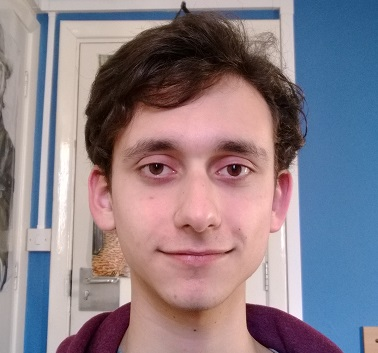

About this site
This website serves as an introduction to me and what I do. I’ve tried to keep things as simple as possible, avoiding Javascript where I can, this website should be functional as a purely html document, so feel free to disable CSS/Scripts. I like leaning towards simplicity in things that I write in my spare time, and the complexity of the modern web is just a little horrifying. So here, at least, I’ve kept things simple. P.S. My favourite colour is blue!
A little about me
 My name is Anthony, most people just call me Tony. I graduated from my Computer Science degree back in 2016, and since then I’ve worked as a mobile app developer at Myzone. I started out working on the iOS app for a couple of years, and have since worked on both Android and iOS, and even got a chance to write the Myzone Tizen app for the Samsung Gear/Galaxy Watch series. I get to work on all sorts of stuff, from Bluetooth, to 3D graphics, to UI and unit testing. It’s good stuff. Outside of work I try to spend a little time to improve myself in other areas; I make a habit of sketching every day, studying the Russian language, and recently added guitar practice to my daily routine (I’ve had this guitar since a misguided purchase back at the start of university…). I see a lot of this as a way to give the brain a bit of a workout in areas different to what it’s used to!
Check out my github at https://github.com/anthonyc-r!
Things I enjoy
It’s probably not much of a surprise that I enjoy programming, operating systems, old computer hardware and the like. I do enjoy programming, however I like to work on stuff that’s different to what I’d usually do at work. Right now I’m working on a little (currently) text-based game engine in C, it’s slow progress but I spend an hour on it most days, chipping away little by little.
I also spend a fair amount of time reading. Recently I’ve been powering through the Wheel of Time series by Robert Jordan. I love a good fantasy series! Past favourites include some of Philip K.Dick’s science fiction novels, Stephen King’s Dark Tower series (barring those last few books, when King self-inserted was around when I decided I’d had enough), Iron Kingdom: 'The Rise and Downfall of Prussia' an interesting book about the abolished Prussian state. Just to name a few.
Image curtsey of freedigitalphotos / koratmember.
I also love to spend a bit of time studying – mainly on weekends when I can wedge a couple of hours in and still have a fair amount of free time for other stuff. Like I mentioned before, I’m studying Russian, I picked it up mainly because of a Russian friend, and the discovery of a really cool movie Igla (The Needle), and the band Kino who the lead actor is from! A great movie, and an amazing band. In addition to this I’m studying a book on the Linux programming interface, it’s a hefty thing, and it’s probably going to take me a good year to get through it at a couple of hours a week, but I’ll get there.
I spend a fair bit of time gaming too, mainly PC. Strategy games, point-and-clicks, RPGs, stuff. I’m not a massive online gamer.